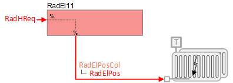
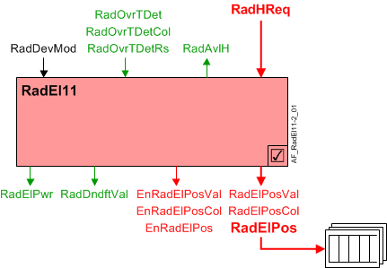
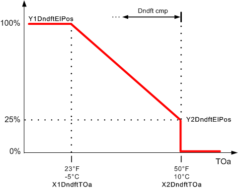

电散热器，带下降气流补偿调节 (RadEl11)
 | 本应用功能modulates electric radiator(s)并支持下降补偿。 散热器电气位置是根据供暖请求信号（来自房间控制器）计算的。 支持多个散热器控制。 散热器过热检测器有一个可选的二进制输入。 另一个可选的二进制输出可用于启用辐射器调制。 |
Required elements and how to configure them:
元素 | I/O | 信号类型 |
|---|---|---|
RadElPos "Radiator electric position" | On-board output, Radiator valve position 1 | Electric modulating |
 WARNING
WARNING

电热线圈需要安全限温器
电加热线圈安装不当会导致火灾并造成生命和财产损失。
- Install a high temperature cut-out switch on all electric heating elements.
- Ensure that all wiring and installation conform to applicable safety codes and regulations.
Function
下图显示了与此应用程序函数关联的 BACnet 对象。主要信号流程总结如下：
散热器供暖要求（RadHReq）被接收并处理为散热器电气位置的输出信号（RadElPos).
基本功能：接受来自关联房间控制器的请求信号并通过设备模式逻辑开关传递；将结果作为命令输出到控制设备的 BACnet 对象。

| 命令或请求（或相关） |
| 条件或状态或可用性的通知 |
| 设备模式 |


Analog control of electric radiator(s):为了响应供暖需求，散热器电气位置 (RadElPos) 进行调节，将室温控制在设定点。为了响应特殊模式（例如预热、冷却或安全条件）的外部触发，散热器可以设置为关闭或完全打开。
Note
这个AF不进行循环控制；它的主要目的是运行命令。循环控制进程（对于此 AF）在“房间”AF 中进行管理，该房间与此 AF 协作以命令终端设备。
Multiple radiator control:散热器电气位置采集对象（RadElPosCol）可以参考和控制多个散热器。
散热器电气位置物体（RadElPos) 被散热器电气位置集合对象 (RadElPosCol）；该集合对象是任何/所有的公共节点RadElPos对象。的价值RadElPos来自RadElPosVal.
Downdraft compensation:下沉气流补偿功能可减缓大窗户表面下沉的冷气流，并对抗冷周边表面的冷墙效应。当外部空气温度低于配置值时，此功能会激活散热器，将散热器的最低温度提高到高于其他情况的值。
下降气流补偿是使用线性复位功能实现的。下图显示了 X、Y 下吸风补偿参数的出厂默认值。
范围EnDndft必须设置为 1：是，下沉气流补偿才能发挥作用（请参阅Configuration).

Device mode:设备模式的输入信号是多状态值。
RadDevMod支持以下状态：
- Off
- Control mode (modulation)
- Fully open
- Ctrl.mode & downdraft (modulation plus downdraft compensation)
- Downdraft (downdraft compensation)
Heating available status:当散热器可用于加热时，二进制输出信号为“Radiator available for heating" (RadAvlH）将为“是”（可用）。RadAvlH系统使用它来调节加热资源。例如，如果需要供暖，但散热器不可用，因为它们已经处于最大容量（因为设备模式完全打开），则RadAvlH将发出“否”信号，并且将激活温度控制序列中的下一个可用加热资源。
要使加热可用状态为“是”，设备模式必须等于“控制模式”（调制）。
High temperature cut-out switch:该 AF 有一个散热器过温检测输入（RadOvrTDet）来自高温断路开关。过温检测输入对象由散热器过温检测集合对象引用（RadOvrTDetCol）；该集合对象是any/all的公共节点RadOvrTDet输入对象。
这RadOvrTDet使用 OR 语句分析对象。如果一个或多个对象检测到温度过高，则二进制结果对象 (RadOvrTDetRs) 从 0 切换到 1，导致散热器以设备保护优先级关闭。
Electric power usage:提供电散热器的标称电力使用量，用于能源监控以及与其他设备的协调。以下公式计算散热器开启时的电力使用量 (RadElPosVal > 0%)：
RadElPwr = RadElPosVal * NomElPwr （散热器关闭时使用零功率）
Configuration
 Parameters
Parameters
描述 | 范围 | 默认值 |
|---|---|---|
Nominal electric power | NomElPwr | 0.4 [kW] |
Enable overtemperature detector input 0:No | EnOvrTDetIn | 0:No |
Downdraft compensation | ||
Enable downdraft compensation 0:No | EnDndft | 0:No |
Downdraft characteristics for outside air temperature X1 | X1DndftTOa | -5.0 [°C] |
Downdraft characteristics for electric position Y1 | Y1DndftElPos | 100 [%] |
Downdraft characteristics for outside air temperature X2 | X2DndftTOa | 10.0 [°C] |
Downdraft characteristics for electric position Y2 | Y2DndftElPos | 25 [%] |
Internal settings – do not change | ||
Temperature unit | TUnit | [°C] |
Interface
界面 | 描述 | 类型 | 参考号 | 拥有者 | |
|---|---|---|---|---|---|
RadElPosCol | Collection of radiator electric position | ColView | ● | - | |
| RadElPos | Radiator electric position(1...n) | AO | ◉ | Room segment / Device |
RadElPosVal | Radiator electric position value | APrcVal | ● | - | |
EnRadElPosCol | Collection of enable radiator electric position | ColView | ● | - | |
| EnRadElPos | Enable radiator electric position(1...n) 0:Off | BO | ◉ | Room segment / Device |
EnRadElPosVal | Enable radiator electric position value 0:Off | BPrcVal | ● | - | |
RadOvrTDetCol | Collection of radiator overtemperature detector 0:Off | ColView | ● | - | |
| RadOvrTDetRs | Result of radiator overtemperature detector 0:Off | BCalcVal | ● | - |
RadOvrTDet | Radiator overtemperature detector(1...n) | BI | ◉ | Room segment / Device | |
RadDevMod | Radiator device mode 1:Off | MPrcVal | ● | - | |
RadHReq | Radiator heating request | ACalcVal | ● | - | |
RadAvlH | Radiator available for heating 0:No | BCalcVal | ● | - | |
RadDndftVal | Radiator downdraft value | ACalcVal | ● | - | |
RadElPwr | Radiator electric power | ACalcVal | ● | - | |
Engineering and commissioning
如果一个高温安全开关跳闸，则由该 AF 驱动的所有散热器都会关闭。确认多个散热器（多进多出）的安全开关功能。
设计工程师可以选择散热器的输出类型。创建每种输出类型的逻辑嵌入在控制器中。有两种类型的输出：
- PID loop creates 0 to 100% analog heating demand signal to drive the electric radiator(s)
- PID loop creates 0 / 50 / 100% staged signal to drive the electric radiator(s)